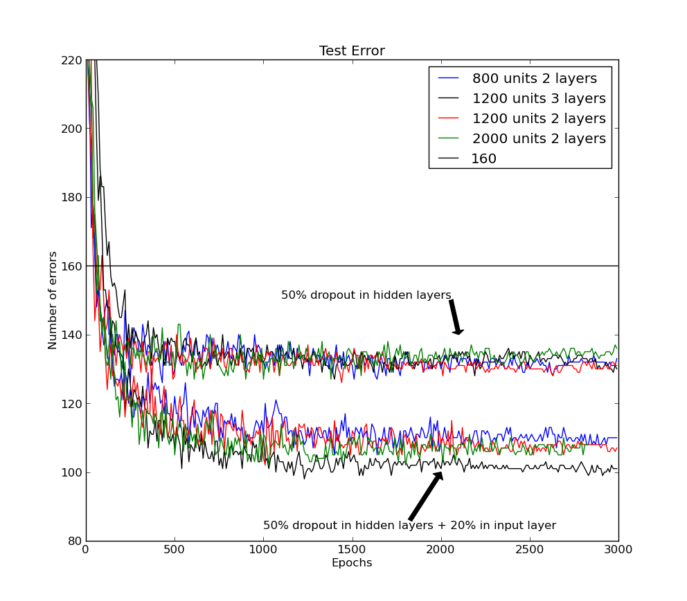
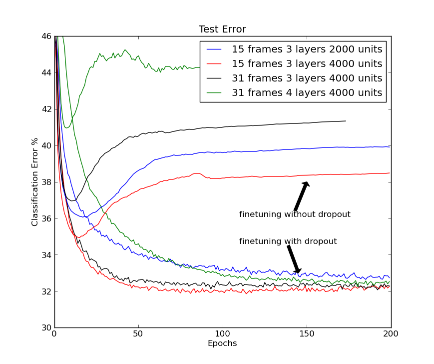
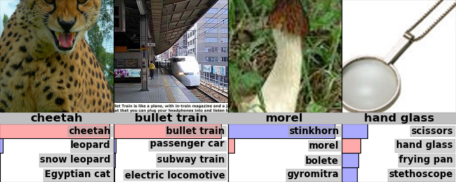
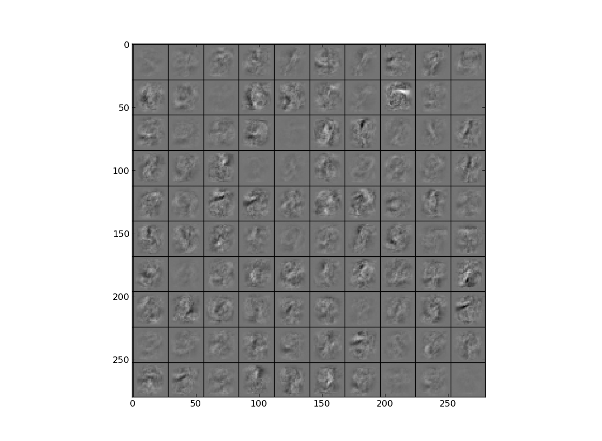
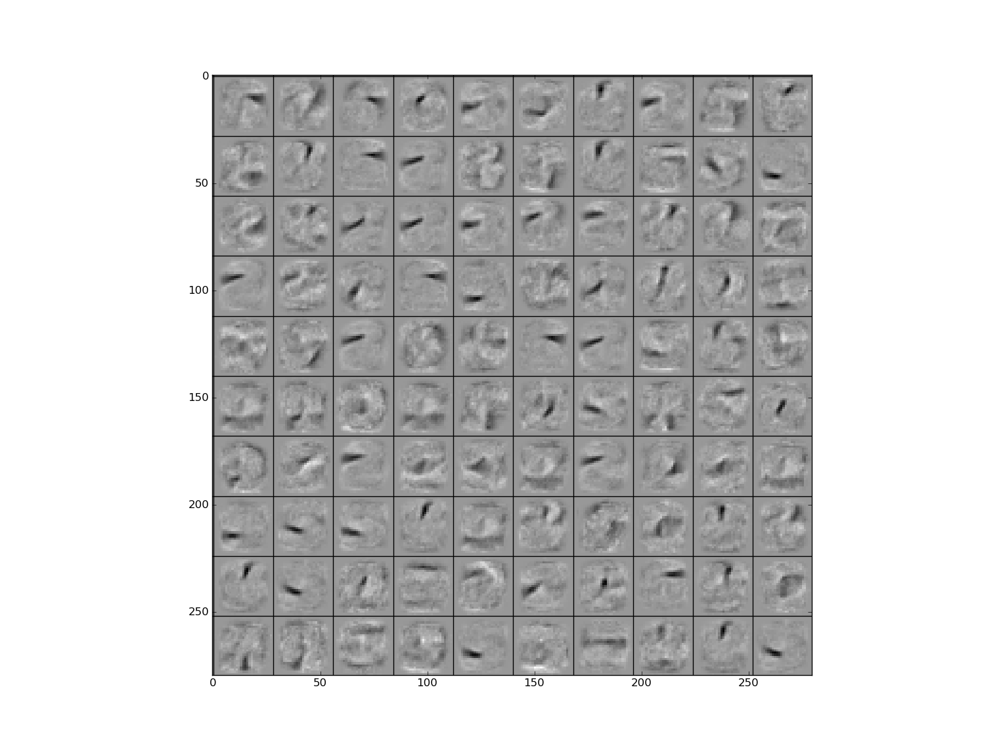
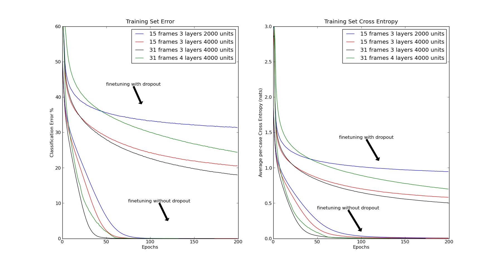
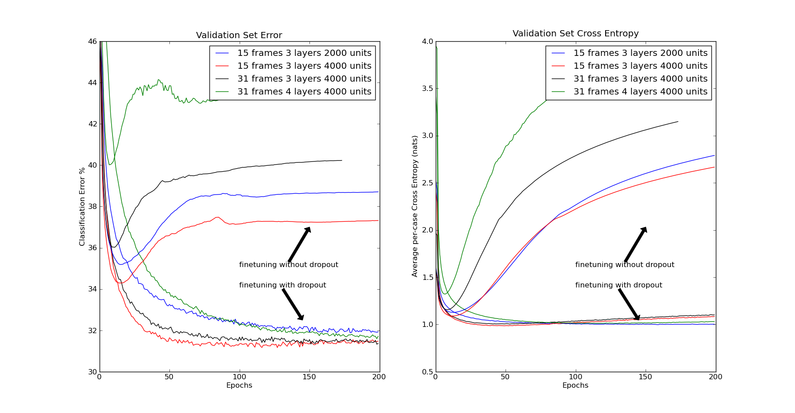
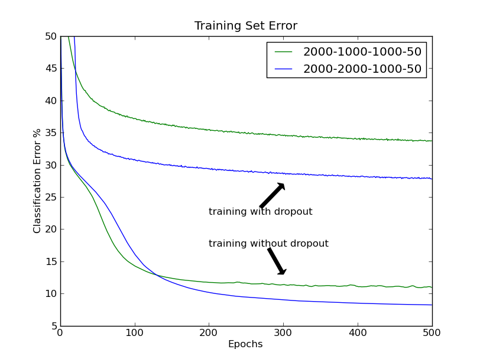
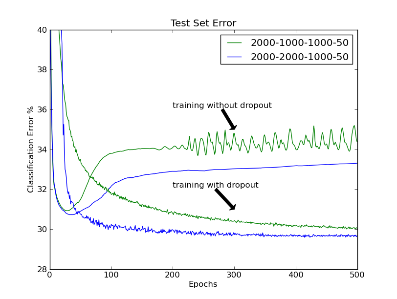

Improving neural networks by preventing co-adaptation of feature detectors
When a large feedforward neural network is trained on a small training set, it typically performs poorly on held-out test data. This “overfitting” is greatly reduced by randomly omitting half of the feature detectors on each training case. This prevents complex co-adaptations in which a feature detector is only helpful in the context of several other specific feature detectors. Instead, each neuron learns to detect a feature that is generally helpful for producing the correct answer given the combinatorially large variety of internal contexts in which it must operate. Random “dropout” gives big improvements on many benchmark tasks and sets new records for speech and object recognition.
A feedforward, artificial neural network uses layers of non-linear “hidden” units between its inputs and its outputs. By adapting the weights on the incoming connections of these hidden units it learns feature detectors that enable it to predict the correct output when given an input vector (?). If the relationship between the input and the correct output is complicated and the network has enough hidden units to model it accurately, there will typically be many different settings of the weights that can model the training set almost perfectly, especially if there is only a limited amount of labeled training data. Each of these weight vectors will make different predictions on held-out test data and almost all of them will do worse on the test data than on the training data because the feature detectors have been tuned to work well together on the training data but not on the test data.
Overfitting can be reduced by using “dropout” to prevent complex co-adaptations on the training data. On each presentation of each training case, each hidden unit is randomly omitted from the network with a probability of 0.5, so a hidden unit cannot rely on other hidden units being present. Another way to view the dropout procedure is as a very efficient way of performing model averaging with neural networks. A good way to reduce the error on the test set is to average the predictions produced by a very large number of different networks. The standard way to do this is to train many separate networks and then to apply each of these networks to the test data, but this is computationally expensive during both training and testing. Random dropout makes it possible to train a huge number of different networks in a reasonable time. There is almost certainly a different network for each presentation of each training case but all of these networks share the same weights for the hidden units that are present.
We use the standard, stochastic gradient descent procedure for training the dropout neural networks on mini-batches of training cases, but we modify the penalty term that is normally used to prevent the weights from growing too large. Instead of penalizing the squared length (L2 norm) of the whole weight vector, we set an upper bound on the L2 norm of the incoming weight vector for each individual hidden unit. If a weight-update violates this constraint, we renormalize the weights of the hidden unit by division. Using a constraint rather than a penalty prevents weights from growing very large no matter how large the proposed weight-update is. This makes it possible to start with a very large learning rate which decays during learning, thus allowing a far more thorough search of the weight-space than methods that start with small weights and use a small learning rate.
At test time, we use the “mean network” that contains all of the hidden units but with their outgoing weights halved to compensate for the fact that twice as many of them are active. In practice, this gives very similar performance to averaging over a large number of dropout networks. In networks with a single hidden layer of units and a “softmax” output layer for computing the probabilities of the class labels, using the mean network is exactly equivalent to taking the geometric mean of the probability distributions over labels predicted by all possible networks. Assuming the dropout networks do not all make identical predictions, the prediction of the mean network is guaranteed to assign a higher log probability to the correct answer than the mean of the log probabilities assigned by the individual dropout networks (?). Similarly, for regression with linear output units, the squared error of the mean network is always better than the average of the squared errors of the dropout networks.
We initially explored the effectiveness of dropout using MNIST, a widely used benchmark for machine learning algorithms. It contains 60,000 28x28 training images of individual hand written digits and 10,000 test images. Performance on the test set can be greatly improved by enhancing the training data with transformed images (?) or by wiring knowledge about spatial transformations into a convolutional neural network (?) or by using generative pre-training to extract useful features from the training images without using the labels (?). Without using any of these tricks, the best published result for a standard feedforward neural network is 160 errors on the test set. This can be reduced to about 130 errors by using 50% dropout with separate L2 constraints on the incoming weights of each hidden unit and further reduced to about 110 errors by also dropping out a random 20% of the pixels (see figure 1).

Dropout can also be combined with generative pre-training, but in this case we use a small learning rate and no weight constraints to avoid losing the feature detectors discovered by the pre-training. The publically available, pre-trained deep belief net described in (?) got 118 errors when it was fine-tuned using standard back-propagation and 92 errors when fine-tuned using 50% dropout of the hidden units. When the publically available code at URL was used to pre-train a deep Boltzmann machine five times, the unrolled network got 103, 97, 94, 93 and 88 errors when fine-tuned using standard backpropagation and 83, 79, 78, 78 and 77 errors when using 50% dropout of the hidden units. The mean of 79 errors is a record for methods that do not use prior knowledge or enhanced training sets (For details see Appendix A).
We then applied dropout to TIMIT, a widely used benchmark for recognition of clean speech with a small vocabulary. Speech recognition systems use hidden Markov models (HMMs) to deal with temporal variability and they need an acoustic model that determines how well a frame of coefficients extracted from the acoustic input fits each possible state of each hidden Markov model. Recently, deep, pre-trained, feedforward neural networks that map a short sequence of frames into a probability distribution over HMM states have been shown to outperform tradional Gaussian mixture models on both TIMIT (?) and a variety of more realistic large vocabulary tasks (?, ?).
Figure 2 shows the frame classification error rate on the core test set of the TIMIT benchmark when the central frame of a window is classified as belonging to the HMM state that is given the highest probability by the neural net. The input to the net is 21 adjacent frames with an advance of 10ms per frame. The neural net has 4 fully-connected hidden layers of 4000 units per layer and 185 “softmax” output units that are subsequently merged into the 39 distinct classes used for the benchmark. Dropout of 50% of the hidden units significantly improves classification for a variety of different network architectures (see figure 2). To get the frame recognition rate, the class probabilities that the neural network outputs for each frame are given to a decoder which knows about transition probabilities between HMM states and runs the Viterbi algorithm to infer the single best sequence of HMM states. Without dropout, the recognition rate is % and with dropout this improves to %, which is a record for methods that do not use any information about speaker identity.

CIFAR-10 is a benchmark task for object recognition. It uses 32x32 downsampled color images of 10 different object classes that were found by searching the web for the names of the class (e.g. dog) or its subclasses (e.g. Golden Retriever). These images were labeled by hand to produce 50,000 training images and 10,000 test images in which there is a single dominant object that could plausibly be given the class name (?) (see figure 3). The best published error rate on the test set, without using transformed data, is 18.5% (?). We achieved an error rate of 16.6% by using a neural network with three convolutional hidden layers interleaved with three “max-pooling” layers that report the maximum activity in local pools of convolutional units. These six layers were followed by one locally-connected layer (For details see Appendix D) . Using dropout in the last hidden layer gives an error rate of 15.6%.
ImageNet is an extremely challenging object recognition dataset consisting of thousands of high-resolution images of thousands of classes of object (?). In 2010, a subset of 1000 classes with roughly 1000 examples per class was the basis of an object recognition competition in which the winning entry, which was actually an average of six separate models, achieved an error rate of 47.2% on the test set. The current state-of-the-art result on this dataset is 45.7% (?). We achieved comparable performance of 48.6% error using a single neural network with five convolutional hidden layers interleaved with “max-pooling” layer followed by two globally connected layers and a final 1000-way softmax layer. All layers had L2 weight constraints on the incoming weights of each hidden unit. Using 50% dropout in the sixth hidden layer reduces this to a record 42.4% (For details see Appendix E).

For the speech recognition dataset and both of the object recognition datasets it is necessary to make a large number of decisions in designing the architecture of the net. We made these decisions by holding out a separate validation set that was used to evaluate the performance of a large number of different architectures and we then used the architecture that performed best with dropout on the validation set to assess the performance of dropout on the real test set.
The Reuters dataset contains documents that have been labeled with a hierarchy of classes. We created training and test sets each containing 201,369 documents from 50 mutually exclusive classes. Each document was represented by a vector of counts for 2000 common non-stop words, with each count being transformed to . A feedforward neural network with 2 fully connected layers of 2000 hidden units trained with backpropagation gets 31.05% error on the test set. This is reduced to 29.62% by using 50% dropout (Appendix C).
We have tried various dropout probabilities and almost all of them improve the generalization performance of the network. For fully connected layers, dropout in all hidden layers works better than dropout in only one hidden layer and more extreme probabilities tend to be worse, which is why we have used 0.5 throughout this paper. For the inputs, dropout can also help, though it it often better to retain more than 50% of the inputs. It is also possible to adapt the individual dropout probability of each hidden or input unit by comparing the average performance on a validation set with the average performance when the unit is present. This makes the method work slightly better. For datasets in which the required input-output mapping has a number of fairly different regimes, performance can probably be further improved by making the dropout probabilities be a learned function of the input, thus creating a statistically efficient “mixture of experts” (?) in which there are combinatorially many experts, but each parameter gets adapted on a large fraction of the training data.
Dropout is considerably simpler to implement than Bayesian model averaging which weights each model by its posterior probability given the training data. For complicated model classes, like feedforward neural networks, Bayesian methods typically use a Markov chain Monte Carlo method to sample models from the posterior distribution (?). By contrast, dropout with a probability of assumes that all the models will eventually be given equal importance in the combination but the learning of the shared weights takes this into account. At test time, the fact that the dropout decisions are independent for each unit makes it very easy to approximate the combined opinions of exponentially many dropout nets by using a single pass through the mean net. This is far more efficient than averaging the predictions of many separate models.
A popular alternative to Bayesian model averaging is “bagging” in which different models are trained on different random selections of cases from the training set and all models are given equal weight in the combination (?). Bagging is most often used with models such as decision trees because these are very quick to fit to data and very quick at test time (?). Dropout allows a similar approach to be applied to feedforward neural networks which are much more powerful models. Dropout can be seen as an extreme form of bagging in which each model is trained on a single case and each parameter of the model is very strongly regularized by sharing it with the corresponding parameter in all the other models. This is a much better regularizer than the standard method of shrinking parameters towards zero.
A familiar and extreme case of dropout is “naive bayes” in which each input feature is trained separately to predict the class label and then the predictive distributions of all the features are multiplied together at test time. When there is very little training data, this often works much better than logistic classification which trains each input feature to work well in the context of all the other features.
Finally, there is an intriguing similarity between dropout and a recent theory of the role of sex in evolution (?). One possible interpretation of the theory of mixability articulated in (?) is that sex breaks up sets of co-adapted genes and this means that achieving a function by using a large set of co-adapted genes is not nearly as robust as achieving the same function, perhaps less than optimally, in multiple alternative ways, each of which only uses a small number of co-adapted genes. This allows evolution to avoid dead-ends in which improvements in fitness require co- ordinated changes to a large number of co-adapted genes. It also reduces the probability that small changes in the environment will cause large decreases in fitness – a phenomenon which is known as “overfitting” in the field of machine learning.
References and Notes
- 1. D. E. Rumelhart, G. E. Hinton, R. J. Williams, Nature 323, 533 (1986).
- 2. G. E. Hinton, Neural Computation 14, 1771 (2002).
- 3. L. M. G. D. C. Ciresan, U. Meier, J. Schmidhuber, Neural Computation 22, 3207 (2010).
- 4. Y. B. Y. Lecun, L. Bottou, P. Haffner, Proceedings of the IEEE 86, 2278 (1998).
- 5. G. E. Hinton, R. Salakhutdinov, Science 313, 504 (2006).
- 6. A. Mohamed, G. Dahl, G. Hinton, IEEE Transactions on Audio, Speech, and Language Processing, 20, 14 (2012).
- 7. G. Dahl, D. Yu, L. Deng, A. Acero, IEEE Transactions on Audio, Speech, and Language Processing, 20, 30 (2012).
- 8. N. Jaitly, P. Nguyen, A. Senior, V. Vanhoucke, An Application OF Pretrained Deep Neural Networks To Large Vocabulary Conversational Speech Recognition, Tech. Rep. 001, Department of Computer Science, University of Toronto (2012).
- 9. A. Krizhevsky, Learning multiple layers of features from tiny images, Tech. Rep. 001, Department of Computer Science, University of Toronto (2009).
- 10. A. Coates, A. Y. Ng, ICML (2011), pp. 921–928.
- 11. J. Deng, et al., CVPR09 (2009).
- 12. J. Sanchez, F. Perronnin, CVPR11 (2011).
- 13. S. J. N. R. A. Jacobs, M. I. Jordan, G. E. Hinton, Neural Computation 3, 79 (1991).
- 14. R. M. Neal, Bayesian Learning for Neural Networks, Lecture Notes in Statistics No. 118 (Springer-Verlag, New York, 1996).
- 15. L. Breiman, Machine Learning 24, 123 (1996).
- 16. L. Breiman, Machine Learning 45, 5 (2001).
- 17. J. D. A. Livnat, C. Papadimitriou, M. W. Feldman, PNAS 105, 19803– (2008).
- 18. R. R. Salakhutdinov, G. E. Hinton, Artificial Intelligence and Statistics (2009).
- 19. D. D. Lewis, T. G. R. Y. Yang, Journal of Machine Learning 5, 361 (2004).
-
1.
We thank N. Jaitly for help with TIMIT, H. Larochelle, R. Neal, K. Swersky and C.K.I. Williams for helpful discussions, and NSERC, Google and Microsoft Research for funding. GEH and RRS are members of the Canadian Institute for Advanced Research.
Appendix A Experiments on MNIST
A.1 Details for dropout training
The MNIST dataset consists of 28 28 digit images - 60,000 for training and 10,000 for testing. The objective is to classify the digit images into their correct digit class. We experimented with neural nets of different architectures (different number of hidden units and layers) to evaluate the sensitivity of the dropout method to these choices. We show results for 4 nets (784-800-800-10, 784-1200-1200-10, 784-2000-2000-10, 784-1200-1200-1200-10). For each of these architectures we use the same dropout rates - 50% dropout for all hidden units and 20% dropout for visible units. We use stochastic gradient descent with 100-sized minibatches and a cross-entropy objective function. An exponentially decaying learning rate is used that starts at the value of 10.0 (applied to the average gradient in each minibatch). The learning rate is multiplied by 0.998 after each epoch of training. The incoming weight vector corresponding to each hidden unit is constrained to have a maximum squared length of . If, as a result of an update, the squared length exceeds , the vector is scaled down so as to make it have a squared length of . Using cross validation we found that gave best results. Weights are initialzed to small random values drawn from a zero-mean normal distribution with standard deviation 0.01. Momentum is used to speed up learning. The momentum starts off at a value of 0.5 and is increased linearly to 0.99 over the first 500 epochs, after which it stays at 0.99. Also, the learning rate is multiplied by a factor of (1-momentum). No weight decay is used. Weights were updated at the end of each minibatch. Training was done for 3000 epochs. The weight update takes the following form:
where,
with , , , , . While using a constant learning rate also gives improvements over standard backpropagation, starting with a high learning rate and decaying it provided a significant boost in performance. Constraining input vectors to have a fixed length prevents weights from increasing arbitrarily in magnitude irrespective of the learning rate. This gives the network a lot of opportunity to search for a good configuration in the weight space. As the learning rate decays, the algorithm is able to take smaller steps and finds the right step size at which it can make learning progress. Using a high final momentum distributes gradient information over a large number of updates making learning stable in this scenario where each gradient computation is for a different stochastic network.
A.2 Details for dropout finetuning
Apart from training a neural network starting from random weights, dropout can also be used to finetune pretrained models. We found that finetuning a model using dropout with a small learning rate can give much better performace than standard backpropagation finetuning.
Deep Belief Nets - We took a neural network pretrained using a Deep Belief Network (?). It had a 784-500-500-2000 architecture and was trained using greedy layer-wise Contrastive Divergence learning 111For code see http://www.cs.toronto.edu/~hinton/MatlabForSciencePaper.html . Instead of fine-tuning it with the usual backpropagation algorithm, we used the dropout version of it. Dropout rate was same as before : 50% for hidden units and 20% for visible units. A constant small learning rate of 1.0 was used. No constraint was imposed on the length of incoming weight vectors. No weight decay was used. All other hyper-parameters were set to be the same as before. The model was trained for 1000 epochs with stochstic gradient descent using minibatches of size 100. While standard back propagation gave about 118 errors, dropout decreased the errors to about 92.
Deep Boltzmann Machines - We also took a pretrained Deep Boltzmann Machine (?) 222 For code see http://www.utstat.toronto.edu/~rsalakhu/DBM.html (784-500-1000-10) and finetuned it using dropout-backpropagation. The model uses a 1784 - 500 - 1000 - 10 architecture (The extra 1000 input units come from the mean-field activations of the second layer of hidden units in the DBM, See (?) for details). All finetuning hyper-parameters were set to be the same as the ones used for a Deep Belief Network. We were able to get a mean of about 79 errors with dropout whereas usual finetuning gives about 94 errors.


A.3 Effect on features
One reason why dropout gives major improvements over backpropagation is that it encourages each individual hidden unit to learn a useful feature without relying on specific other hidden units to correct its mistakes. In order to verify this and better understand the effect of dropout on feature learning, we look at the first level of features learned by a 784-500-500 neural network without any generative pre-training. The features are shown in Figure 5. Each panel shows 100 random features learned by each network. The features that dropout learns are simpler and look like strokes, whereas the ones learned by standard backpropagation are difficult to interpret. This confirms that dropout indeed forces the discriminative model to learn good features which are less co-adapted and leads to better generalization.
Appendix B Experiments on TIMIT
The TIMIT Acoustic-Phonetic Continuous Speech Corpus is a standard dataset used for evaluation of automatic speech recognition systems. It consists of recordings of 630 speakers of 8 dialects of American English each reading 10 phonetically-rich sentences. It also comes with the word and phone-level transcriptions of the speech. The objective is to convert a given speech signal into a transcription sequence of phones. This data needs to be pre-processed to extract input features and output targets. We used Kaldi, an open source code library for speech 333http://kaldi.sourceforge.net, to pre-process the dataset so that our results can be reproduced exactly. The inputs to our networks are log filter bank responses. They are extracted for 25 ms speech windows with strides of 10 ms.
Each dimension of the input representation was normalized to have mean 0 and variance 1. Minibatches of size 100 were used for both pretraining and dropout finetuning. We tried several network architectures by varying the number of input frames (15 and 31), number of layers in the neural network (3, 4 and 5) and the number of hidden units in each layer (2000 and 4000). Figure 6 shows the validation error curves for a number of these combinations. Using dropout consistently leads to lower error rates.


B.1 Pretraining
For all our experiments on TIMIT, we pretrain the neural network with a Deep Belief Network (?). Since the inputs are real-valued, the first layer was pre-trained as a Gaussian RBM. Visible biases were initialized to zero and weights to random numbers sampled from a zero-mean normal distribution with standard deviation 0.01. The variance of each visible unit was set to 1.0 and not learned. Learning was done by minimizing Contrastive Divergence. Momentum was used to speed up learning. Momentum started at 0.5 and was increased linearly to 0.9 over 20 epochs. A learning rate of 0.001 on the average gradient was used (which was then multiplied by 1-momentum). An L2 weight decay of 0.001 was used. The model was trained for 100 epochs.
All subsequent layers were trained as binary RBMs. A learning rate of 0.01 was used. The visible bias of each unit was initialized to where was the mean activation of that unit in the dataset. All other hyper-parameters were set to be the same as those we used for the Gaussian RBM. Each layer was trained for 50 epochs.
B.2 Dropout Finetuning
The pretrained RBMs were used to initialize the weights in a neural network. The network was then finetuned with dropout-backpropagation. Momentum was increased from 0.5 to 0.9 linearly over 10 epochs. A small constant learning rate of 1.0 was used (applied to the average gradient on a minibatch). All other hyperparameters are the same as for MNIST dropout finetuning. The model needs to be run for about 200 epochs to converge. The same network was also finetuned with standard backpropagation using a smaller learning rate of 0.1, keeping all other hyperparameters
Figure 6 shows the frame classification error and cross-entropy objective value on the training and validation sets. We compare the performance of dropout and standard backpropagation on several network architectures and input representations. Dropout consistently achieves lower error and cross-entropy. It significantly controls overfitting, making the method robust to choices of network architecture. It allows much larger nets to be trained and removes the need for early stopping. We also observed that the final error obtained by the model is not very sensitive to the choice of learning rate and momentum.
Appendix C Experiments on Reuters
Reuters Corpus Volume I (RCV1-v2) (?) is an archive of 804,414 newswire stories that have been manually categorized into 103 topics444The corpus is available at http://www.ai.mit.edu/projects/jmlr/papers/volume5/lewis04a/lyrl2004_rcv1v2_README.htm. The corpus covers four major groups: corporate/industrial, economics, government/social, and markets. Sample topics include Energy Markets, Accounts/Earnings, Government Borrowings, Disasters and Accidents, Interbank Markets, Legal/Judicial, Production/Services, etc. The topic classes form a tree which is typically of depth three.
We took the dataset and split it into 63 classes based on the the 63 categories at the second-level of the category tree. We removed 11 categories that did not have any data and one category that had only 4 training examples. We also removed one category that covered a huge chunk (25%) of the examples. This left us with 50 classes and 402,738 documents. We divided the documents into equal-sized training and test sets randomly. Each document was represented using the 2000 most frequent non-stopwords in the dataset.


We trained a neural network using dropout-backpropagation and compared it with standard backpropagation. We used a 2000-2000-1000-50 architecture. The training hyperparameters are same as that in MNIST dropout training (Appendix A.1). Training was done for 500 epochs.
Figure 7 shows the training and test set errors as learning progresses. We show two nets - one with a 2000-2000-1000-50 and another with a 2000-1000-1000-50 architecture trained with and without dropout. As in all previous datasets discussed so far, we obtain significant improvements here too. The learning not only results in better generalization, but also proceeds smoothly, without the need for early stopping.
Appendix D Tiny Images and CIFAR-10
The Tiny Images dataset contains 80 million color images collected from the web. The images were found by searching various image search engines for English nouns, so each image comes with a very unreliable label, which is the noun that was used to find it. The CIFAR-10 dataset is a subset of the Tiny Images dataset which contains 60000 images divided among ten classes555The CIFAR dataset is available at http://www.cs.toronto.edu/kriz/cifar.html. . Each class contains 5000 training images and 1000 testing images. The classes are airplane, automobile, bird, cat, deer, dog, frog, horse, ship, and truck. The CIFAR-10 dataset was obtained by filtering the Tiny Images dataset to remove images with incorrect labels. The CIFAR-10 images are highly varied, and there is no canonical viewpoint or scale at which the objects appear. The only criteria for including an image were that the image contain one dominant instance of a CIFAR-10 class, and that the object in the image be easily identifiable as belonging to the class indicated by the image label.
Appendix E ImageNet
ImageNet is a dataset of millions of labeled images in thousands of categories. The images were collected from the web and labelled by human labellers using Amazon’s Mechanical Turk crowd-sourcing tool. In 2010, a subset of roughly 1000 images in each of 1000 classes was the basis of an object recognition competition, a part of the Pascal Visual Object Challenge. This is the version of ImageNet on which we performed our experiments. In all, there are roughly 1.3 million training images, 50000 validation images, and 150000 testing images. This dataset is similar in spirit to the CIFAR-10, but on a much bigger scale. The images are full-resolution, and there are 1000 categories instead of ten. Another difference is that the ImageNet images often contain multiple instances of ImageNet objects, simply due to the sheer number of object classes. For this reason, even a human would have difficulty approaching perfect accuracy on this dataset. For our experiments we resized all images to pixels.
Appendix F Convolutional Neural Networks
Our models for CIFAR-10 and ImageNet are deep, feed-forward convolutional neural networks (CNNs). Feed-forward neural networks are models which consist of several layers of “neurons”, where each neuron in a given layer applies a linear filter to the outputs of the neurons in the previous layer. Typically, a scalar bias is added to the filter output and a nonlinear activation function is applied to the result before the neuron’s output is passed to the next layer. The linear filters and biases are referred to as weights, and these are the parameters of the network that are learned from the training data.
CNNs differ from ordinary neural networks in several ways. First, neurons in a CNN are organized topographically into a bank that reflects the organization of dimensions in the input data. So for images, the neurons are laid out on a 2D grid. Second, neurons in a CNN apply filters which are local in extent and which are centered at the neuron’s location in the topographic organization. This is reasonable for datasets where we expect the dependence of input dimensions to be a decreasing function of distance, which is the case for pixels in natural images. In particular, we expect that useful clues to the identity of the object in an input image can be found by examining small local neighborhoods of the image. Third, all neurons in a bank apply the same filter, but as just mentioned, they apply it at different locations in the input image. This is reasonable for datasets with roughly stationary statistics, such as natural images. We expect that the same kinds of structures can appear at all positions in an input image, so it is reasonable to treat all positions equally by filtering them in the same way. In this way, a bank of neurons in a CNN applies a convolution operation to its input. A single layer in a CNN typically has multiple banks of neurons, each performing a convolution with a different filter. These banks of neurons become distinct input channels into the next layer. The distance, in pixels, between the boundaries of the receptive fields of neighboring neurons in a convolutional bank determines the stride with which the convolution operation is applied. Larger strides imply fewer neurons per bank. Our models use a stride of one pixel unless otherwise noted.
One important consequence of this convolutional shared-filter architecture is a drastic reduction in the number of parameters relative to a neural net in which all neurons apply different filters. This reduces the net’s representational capacity, but it also reduces its capacity to overfit, so dropout is far less advantageous in convolutional layers.
F.1 Pooling
CNNs typically also feature “pooling” layers which summarize the activities of local patches of neurons in convolutional layers. Essentially, a pooling layer takes as input the output of a convolutional layer and subsamples it. A pooling layer consists of pooling units which are laid out topographically and connected to a local neighborhood of convolutional unit outputs from the same bank. Each pooling unit then computes some function of the bank’s output in that neighborhood. Typical functions are maximum and average. Pooling layers with such units are called max-pooling and average-pooling layers, respectively. The pooling units are usually spaced at least several pixels apart, so that there are fewer total pooling units than there are convolutional unit outputs in the previous layer. Making this spacing smaller than the size of the neighborhood that the pooling units summarize produces overlapping pooling. This variant makes the pooling layer produce a coarse coding of the convolutional unit outputs, which we have found to aid generalization in our experiments. We refer to this spacing as the stride between pooling units, analogously to the stride between convolutional units. Pooling layers introduce a level of local translation invariance to the network, which improves generalization. They are the analogues of complex cells in the mammalian visual cortex, which pool activities of multiple simple cells. These cells are known to exhibit similar phase-invariance properties.
F.2 Local response normalization
Our networks also include response normalization layers. This type of layer encourages competition for large activations among neurons belonging to different banks. In particular, the activity of a neuron in bank at position in the topographic organization is divided by
where the sum runs over “adjacent” banks of neurons at the same position in the topographic organization. The ordering of the banks is of course arbitrary and determined before training begins. Response normalization layers implement a form of lateral inhibition found in real neurons. The constants , and are hyper-parameters whose values are determined using a validation set.
F.3 Neuron nonlinearities
All of the neurons in our networks utilize the max-with-zero nonlinearity. That is, their output is computed as where is the total input to the neuron (equivalently, the output of the neuron’s linear filter added to the bias). This nonlinearity has several advantages over traditional saturating neuron models, including a significant reduction in the training time required to reach a given error rate. This nonlinearity also reduces the need for contrast-normalization and similar data pre-processing schemes, because neurons with this nonlinearity do not saturate – their activities simply scale up when presented with unusually large input values. Consequently, the only data pre-processing step which we take is to subtract the mean activity from each pixel, so that the data is centered. So we train our networks on the (centered) raw RGB values of the pixels.
F.4 Objective function
Our networks maximize the multinomial logistic regression objective, which is equivalent to minimizing the average across training cases of the cross-entropy between the true label distribution and the model’s predicted label distribution.
F.5 Weight initialization
We initialize the weights in our model from a zero-mean normal distribution with a variance set high enough to produce positive inputs into the neurons in each layer. This is a slightly tricky point when using the max-with-zero nonlinearity. If the input to a neuron is always negative, no learning will take place because its output will be uniformly zero, as will the derivative of its output with respect to its input. Therefore it’s important to initialize the weights from a distribution with a sufficiently large variance such that all neurons are likely to get positive inputs at least occasionally. In practice, we simply try different variances until we find an initialization that works. It usually only takes a few attempts. We also find that initializing the biases of the neurons in the hidden layers with some positive constant (1 in our case) helps get learning off the ground, for the same reason.
F.6 Training
We train our models using stochastic gradient descent with a batch size of 128 examples and momentum of 0.9. Therefore the update rule for weight is
where is the iteration index, is a momentum variable, is the learning rate, and is the average over the batch of the derivative of the objective with respect to . We use the publicly available cuda-convnet package to train all of our models on a single NVIDIA GTX 580 GPU. Training on CIFAR-10 takes roughly 90 minutes. Training on ImageNet takes roughly four days with dropout and two days without.
F.7 Learning rates
We use an equal learning rate for each layer, whose value we determine heuristically as the largest power of ten that produces reductions in the objective function. In practice it is typically of the order or . We reduce the learning rate twice by a factor of ten shortly before terminating training.
Appendix G Models for CIFAR-10
Our model for CIFAR-10 without dropout is a CNN with three convolutional layers. Pooling layers follow all three. All of the pooling layers summarize a neighborhood and use a stride of 2. The pooling layer which follows the first convolutional layer performs max-pooling, while the remaining pooling layers perform average-pooling. Response normalization layers follow the first two pooling layers, with , , and . The upper-most pooling layer is connected to a ten-unit softmax layer which outputs a probability distribution over class labels. All convolutional layers have 64 filter banks and use a filter size of (times the number of channels in the preceding layer).
Our model for CIFAR-10 with dropout is similar, but because dropout imposes a strong regularization on the network, we are able to use more parameters. Therefore we add a fourth weight layer, which takes its input from the third pooling layer. This weight layer is locally-connected but not convolutional. It is like a convolutional layer in which filters in the same bank do not share weights. This layer contains 16 banks of filters of size . This is the layer in which we use 50% dropout. The softmax layer takes its input from this fourth weight layer.
Appendix H Models for ImageNet
Our model for ImageNet with dropout is a CNN which is trained on patches randomly extracted from the images, as well as their horizontal reflections. This is a form of data augmentation that reduces the network’s capacity to overfit the training data and helps generalization. The network contains seven weight layers. The first five are convolutional, while the last two are globally-connected. Max-pooling layers follow the first, second, and fifth convolutional layers. All of the pooling layers summarize a neighborhood and use a stride of 2. Response-normalization layers follow the first and second pooling layers. The first convolutional layer has 64 filter banks with filters which it applies with a stride of 4 pixels (this is the distance between neighboring neurons in a bank). The second convolutional layer has 256 filter banks with filters. This layer takes two inputs. The first input to this layer is the (pooled and response-normalized) output of the first convolutional layer. The 256 banks in this layer are divided arbitrarily into groups of 64, and each group connects to a unique random 16 channels from the first convolutional layer. The second input to this layer is a subsampled version of the original image (), which is filtered by this layer with a stride of 2 pixels. The two maps resulting from filtering the two inputs are summed element-wise (they have exactly the same dimensions) and a max-with-zero nonlinearity is applied to the sum in the usual way. The third, fourth, and fifth convolutional layers are connected to one another without any intervening pooling or normalization layers, but the max-with-zero nonlinearity is applied at each layer after linear filtering. The third convolutional layer has 512 filter banks divided into groups of 32, each group connecting to a unique random subset of 16 channels produced by the (pooled, normalized) outputs of the second convolutional layer. The fourth and fifth convolutional layers similarly have 512 filter banks divided into groups of 32, each group connecting to a unique random subset of 32 channels produced by the layer below. The next two weight layers are globally-connected, with 4096 neurons each. In these last two layers we use 50% dropout. Finally, the output of the last globally-connected layer is fed to a 1000-way softmax which produces a distribution over the 1000 class labels. We test our model by averaging the prediction of the net on ten patches of the input image: the center patch, the four corner patches, and their horizontal reflections. Even though we make ten passes of each image at test time, we are able to run our system in real-time.
Our model for ImageNet without dropout is similar, but without the two globally-connected layers which create serious overfitting when used without dropout.
In order to achieve state-of-the-art performance on the validation set, we found it necessary to use the very complicated network architecture described above. Fortunately, the complexity of this architecture is not the main point of our paper. What we wanted to demonstrate is that dropout is a significant help even for the very complex neural nets that have been developed by the joint efforts of many groups over many years to be really good at object recognition. This is clearly demonstrated by the fact that using non-convolutional higher layers with a lot of parameters leads to a big improvement with dropout but makes things worse without dropout.